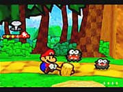
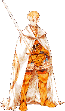
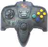
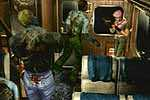

Las patentes de software sólo benefician a las grandes empresas. |
 |
|
|
|
Nintendo 64 Game Boy N. GAMECUBE Game Boy Advance |
|
|
|
Playstation Playstation 2 |
|
|
| Dreamcast |
|
Juegos de Moda |
|
Pokém. Snap(N64) RE Code Vero. (DC) S.Smash Bros (N64) Power Stone 2 (DC) Zelda:M.'s M. (N64) Phantasy S.O. (DC) F. Fantasy IX (PS) Sonic Adv. 2 (DC) Pokémon St. (N64) |
|
Otras Secciones |
|
Colaboraciones Actualizaciones Ant. Noticias Ant. Encuestas Ant. |
|
E-Mail
|
| Noticias Anteriores | |
 Konami ha declarado oficialmente que Zone of Enders, un juego para PS2 de la propia Konami que saldrá en Febrero del 2001, contendrá como un extra una
demo jugable de Metal Gear Solid 2: Sons of Liberty, el título estrella de Konami para PS2 y el que se espera con más expectativa.
Konami ha declarado oficialmente que Zone of Enders, un juego para PS2 de la propia Konami que saldrá en Febrero del 2001, contendrá como un extra una
demo jugable de Metal Gear Solid 2: Sons of Liberty, el título estrella de Konami para PS2 y el que se espera con más expectativa.Castlevania en GBA. (27/9/00) Castlevania: Circle of the Moon será el nombre de la próxima entrega de Castlevania. La consola elegida es la futura portátil de Nintendo, Game Boy Advance. Paper Mario se retrasa. (27/9/00)  Paper Mario, llamado en Japón Mario Story y conocido aquí como Mario RPG 2, ha retrasado su lanzamiento del 26 de Diciembre del 2000 inicial a Febrero del 2001. La causa se debe a la cantidad de titulazos que Nintendo y compañia van a lanzar a la vez: Banjo-Tooie, Zelda: Majora's Mask, Hey you Pikachu!, Mario Party 2, Mario Tennis 64...etc, y claro, no vaya a ser que con tantos nos atragantemos... Star Wars en GAMECUBE. (27/9/00) Rogue Squadron 2, segunda parte del espectacular Shot'em up de Star Wars que salió para N64, será uno de los primeros títulos que saldrá para GAMECUBE. En el ECTS 2000 se pudo ver un video que dejó a todo el público con la boca abierta. Nombre y logo oficial de Xbox. (23/9/00)  Microsoft ha anunciado que finalmente el nombre oficial de la nueva consola será el mismo
por el que la conocimos primeramente, Xbox. Sin embargo, el logo será diferente. Podeis ver el aspecto
del nuevo logo en la foto de la derecha. Tambien se dice o rumorea que los de Cinco Designs son los encargados del
diseño o aspecto que tendrá la aún prematura consola de Microsoft.
Microsoft ha anunciado que finalmente el nombre oficial de la nueva consola será el mismo
por el que la conocimos primeramente, Xbox. Sin embargo, el logo será diferente. Podeis ver el aspecto
del nuevo logo en la foto de la derecha. Tambien se dice o rumorea que los de Cinco Designs son los encargados del
diseño o aspecto que tendrá la aún prematura consola de Microsoft.Metal Gear tambien en Xbox. (23/9/00) Konami ha decidido programar para más consolas el Metal Gear Solid, así a anunciado que sacará para Xbox el Metal Gear Solid X, título que no se sabe aún si será una conversión directa del Metal Gear 2 de PS2 o otro nuevo. Más juegos para Xbox. (23/9/00) Tambien hay en mente los siguientes juegos para Xbox además de Metal Gear Solid X: Jurassic Park X, Crash Bandicoot X, Silent Hill X y La Cosa. Especificaciones oficiales de Xbox. (23/9/00) Las caracteristicas definitivas de Xbox, anunciadas por Microsoft son: - CPU a 733 Mhz - 64 MB RAM - chip gráfico desarrollado por nVidia a 300 Mhz, capaz de generar 100 millones de polígonos por segundo a una resolución máxima de 1920x1080. Anti-aliasing a pantalla completa y ratio 6:1 de compresión de texturas. Tasa de relleno de 4.8 gigapixels por segundo y 150 millones de partículas por segundo - DVD 2X a 5X de 4.5 GB, con capacidad para reproducir películas por hardware - salida para cuatro controladores - puerto compatible con Ethernet y opción para incorporar módem - disco duro de 8 GB, y tarjeta de menmoria de 8 MB - 256 canales de sonido con soporte 3D, Midi y GL2 Juegos para GAMECUBE. (23/9/00) Swing Entertainment tiene en mente 5 titulos para GAMECUBE: Animaniacs, Tiny Toons, The Land before Time, Creatures y Knights. Resident Evil estará en PS2. (23/9/00) Capcom a confirmado que finalmente Resident Evil, aventura terrorífica con millones de fans, saldrá en PS2 en el 2001. Aún no han dicho la fecha final, pero se dice que puede ser en enero 2001 en Japón. Los más pesimistas apuntan a que será entrados el 2001. Square y GAMECUBE. (19/9/00)  Hay rumores que indican que Square tiene previstos futuros desarrollos para la nueva consola de Nintendo, Gamecube. Si fuera ese el caso, algunas series tan importantes como Final Fantasy podrian aparecer de nuevo para una consola de Nintendo, como ya ocurriera en SNES. El caso es que este tema ha movido numerosas especulaciones y Square ha tenido que hacer declaraciones al respecto. En ellas no dice ni que sí ni que no. Es decir, no desmienten los rumores: "Square se encuentra actualmente desarrollando para PS2. Como dejamos claro cuando Xbox fue anunciada, Square está abierta a nuevas plataformas" "... desarrollaremos para aquellas plataformas que creamos, colmen nuestras espectativas. La introducción de una nueva plataforma anima la industria del videojuego, lo que creemos que es una cosa muy buena". FFIX se retrasa. (18/9/00) Atención porque estas navidades nos quedaremos sin FFIX, sí porque Square a retrasado el lanzamiento de su título estrella hasta principios del 2001, al parecer según HC por la complicada localización de mercados tan importantes como el francés o el alemán. Fecha de bajada de precios de DC. (18/9/00) Dreamcast bajará su precio de 39.990 ptas de antes a 29.990 ptas de ahora, 10.000 ptas de diferencia (notoria bajada de precios) el dia 28 de Septiembre del 2000, exactamente de aquí a 10 dias, cuando hace 1 año exacto que salió a la venta. ¡feliz cumpleaños!. Zelda: Majora's Mask se prepara. (18/9/00) Además de haber aparecido nueva información del juego, en radiozelda.com, web dedicada al título de Nintendo tienen un video con nuevas imágenes del juego. Ademas, Nintendo América tiene preparada una mega-campaña publicitaria para hacer llegar a todos el nuevo Zelda. Pinocho en GBA. (18/2/00)  Pinobee, así lo presentan, es el penúltimo titulo que se sabe saldrá para GBA, y unas de las cosas más sorprendentes de este
juego, que en principio no puede parecer muy atractivo por el nombre, son sus maravillosos gráficos. Aquí teneis una captura que ha salido
del juego en pleno desarrollo.
Pinobee, así lo presentan, es el penúltimo titulo que se sabe saldrá para GBA, y unas de las cosas más sorprendentes de este
juego, que en principio no puede parecer muy atractivo por el nombre, son sus maravillosos gráficos. Aquí teneis una captura que ha salido
del juego en pleno desarrollo.Disney tambien en Gamecube. (18/9/00) La factoría Disney tambien tiene preparados 2 títulos para la preciada nueva consola de Nintendo: Gamecube. Estos son: Donald Duck Quack Attack y Dinosaurs, el nuevo éxito de Disney. Nuon, la nueva plataforma multimedia. (18/9/00)  Pretende ser un nuevo hardware capaz de reproducir DVD's y utilizar la ultima tecnología para tambien jugar a juegos, como PS2. El nuevo hardware de VM Labs se llamará Nuon y hasta ahora solo se ha publicado la foto de como será su mando, y es calcado, igualito que el de la N64. Para empezar, no son muy originales... Silent Hill de GBA. (18/9/00) Cada día se sabe más de este juego de terror que debutó en la Playstation con bastante éxito. Algunas webs ya tienen videos de como será el juego, aquí podeis encontrar un video donde se demuestra la potencia gráfica que puede alcanzar GBA. Resident Evil se pasa a GAMECUBE. (9/9/00)  Rebeca Chambers, del equipo Bravo, será la protagonista del Resident Evil que Capcom tiene destinado para la futura consola de Nintendo. Se llamará Resident Evil Zero y era el que estaba destinado para N64, pero que supongo, a no ser que hagan una conversión, no saldrá finalmente. SegaNet ya esta en servicio. (9/9/00) Los usuarios de Dreamcast ya pueden disfrutar plenamente del servicio On-Line de Sega, con el podrán chater, mandar emails toda clase de actividades con otros usuarios de DC. Sin olvidarnos por supuesto de jugar on-line, que es lo principal. WonderSwan Color reta a Game Boy. (9/9/00) Bandai es esta vez la que pretende arrebatarle a Nintendo un trozo en el mercado de las portátiles. Por ahora, ya se prevé para esta nueva consola el Final Fantasy I, II y III. Square parece que la apoya, pero los 10 millones de GB no son poca cosa. Sólo posee un 8% del mercado y la potencia es parecida a la de GBC. No sé que futuro le depara a esta consola con la llegada de GBA. Por cierto, hay posibilidad de que la consola llegue a USA y Europa. Mando sin cables para GAMECUBE. (9/9/00) Nintendo lanzará para GAMECUBE un especial llamado Wavebird, que se caracterizará por no tener los molestos cables y poder jugar hasta desde 10 metros de distancia. Vuelve Superman. (9/9/00) Se han previsto nuevos títulos del superhombre para DC, PS2 y GAMECUBE. ISS para GAMECUBE. (9/9/00) Poco a poco se van desvelando los próximos títulos que saldran para la GAMECUBE, uno de ellos es el famoso International SuperStar Soccer de Konami, la única saga capaz de plantarle cara a la FIFA. Browsers de Nintendo. (9/9/00) Spyro en X-box. (9/9/00) El dragón plataformero de Playstation tendrá su segunda parte en la máquina de Microsoft, X-box. Tambien tendrá versiones de PS2, PC y GBA. DC ya ha bajado su precio. (9/9/00) Como ya anticipe antes, finalmente se ha dado ese bajón de precios por parte de Sega por la llegada de PS2. El precio rondará las 30.000 ptas y se aplicará en USA y tambien aquí y en Europa en general. Fecha de salida de GBA. (9/9/00) En Japón: 21 de Marzo del 2000; En USA: Julio del 2000; Europa: No se sabe aún. Speed Devils On Line. (9/9/00) Se ha anunciado el lanzamiento de una versión especial mejorada y On-Line del juego de velocidad de DC. DC saldrá tambien con DVD. (9/9/00) Debido al ya inminente lanzamiento de PS2, Sega ha optado por la posibilidad de lanzar un pack conjunto de su Dreamcast + DVD incluido (como PS2) para los que quieran ver peliculas. Valdrá 299 libras (Como la PS2) y saldrá a finales de Septiembre. X-box con más memoria. (9/9/00) Finalmente, se dice que la memoria de X-box será definitivamente de 128 MB de RAM, y no 64 como se decía. Más memoria: Más definición, velocidad y en definitiva, más potencia. |
come.to/videojuegos
videojuegos.come.to